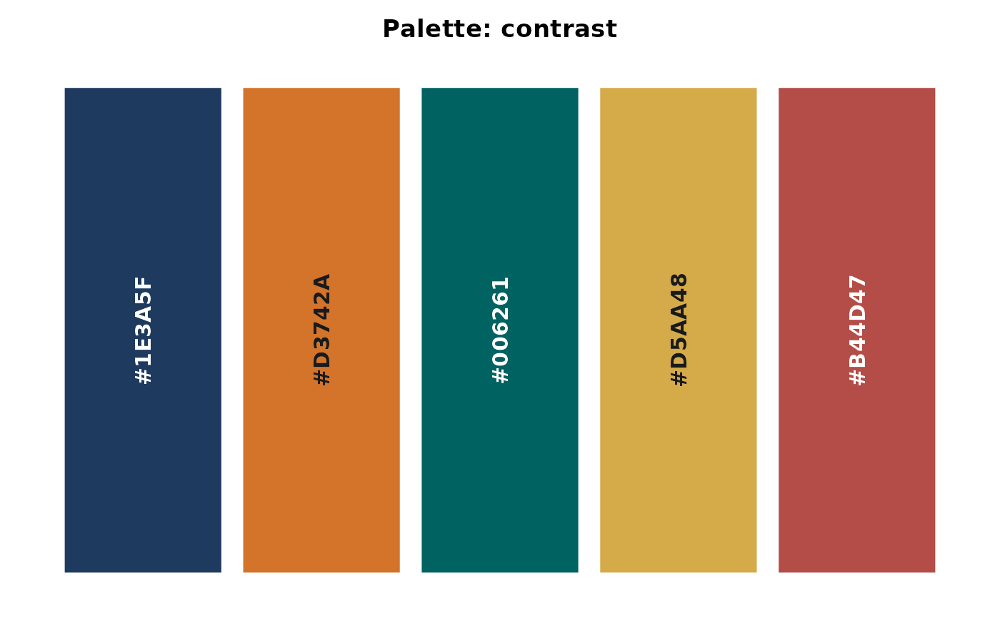
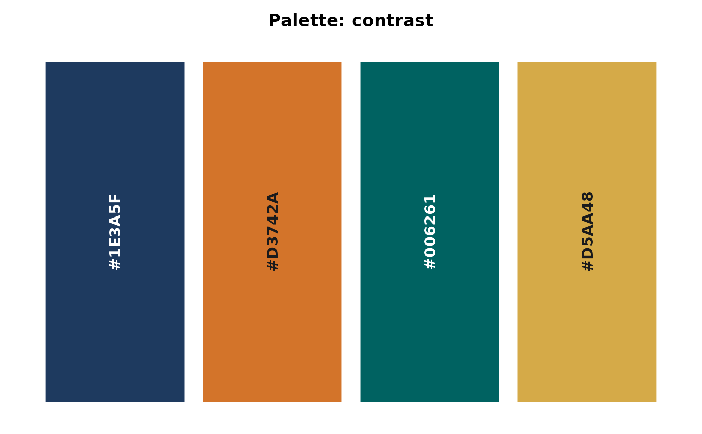
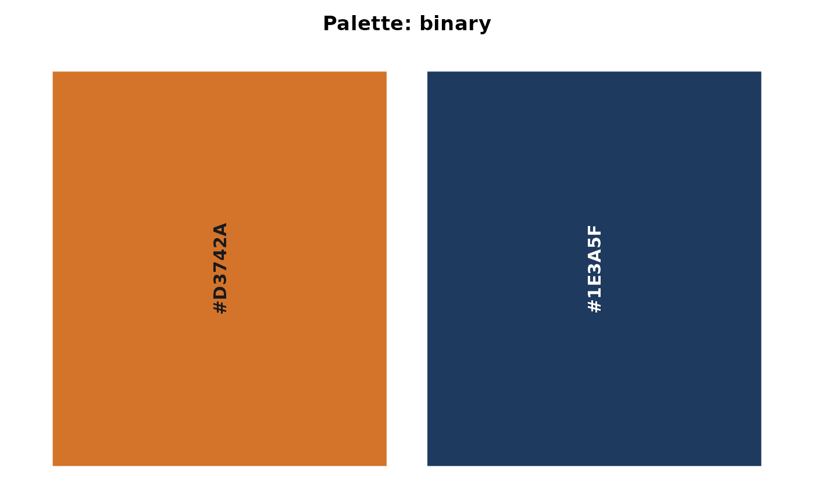
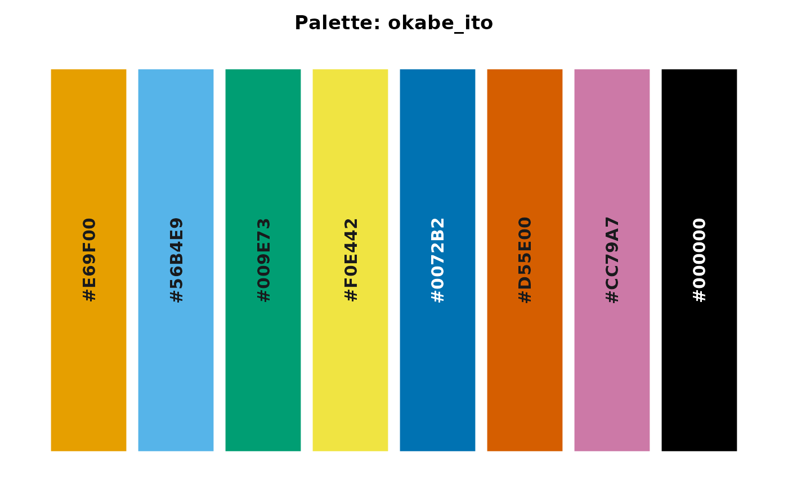

Returns colors for data visualization. Includes EKIO brand scales, curated categorical and small-group palettes, and standard scientific palettes. When printed interactively, displays the palette as a colored swatch with hex labels.
Source
The brand scales are generated from one OKLCH specification in
data-raw/build-ramps.R: a shared lightness spine anchored on the brand
navy, a shared chroma arc, and a hue path per family. The scientific
palettes come from matplotlib ("viridis", "inferno", "plasma") and
from Okabe & Ito ("okabe_ito"). Notices are in inst/COPYRIGHTS.
Arguments
- palette
Character. Name of the palette. See
list_ekio_palettes()for all available options.- n
Integer or NULL. Number of colors to return. If NULL, returns all. For sequential and diverging palettes,
ncolors are interpolated across the full range. For categorical, small-group, and scientific palettes the firstncolors are taken, interpolating only ifnexceeds the palette length.- reverse
Logical. If TRUE, reverses the palette order.
Value
Object of class ekio_palette (a character vector of hex
codes). Printing displays a visual swatch. Use as.character() to
strip the class.
Details
Brand scales ("blue", "gray", "stone", "teal", "green",
"orange", "red") are nine-step ramps running light to dark, named by
shade. Position and shade are aligned by construction, so
ekio_pal("blue")[7] and ekio_pal("blue")["700"] are the same color.
"gold" is an accent rather than a scale: three colors named "light",
"mid" and "deep", because a nine-step gold ramp turns brown at the
dark end. They sit on the same lightness rungs as scale shades 300, 400
and 500.
Examples
ekio_pal("contrast")

ekio_pal("contrast", n = 4)

ekio_pal("binary", reverse = TRUE)

ekio_pal("okabe_ito")

# Brand scales are named by shade; position i is shade i * 100
ekio_pal("blue")["700"]
#> 700
#> "#1E3A5F"
ekio_pal("blue")[7]
#> 700
#> "#1E3A5F"
# gold is an accent, named rather than numbered
ekio_pal("gold")["mid"]
#> mid
#> "#B88715"